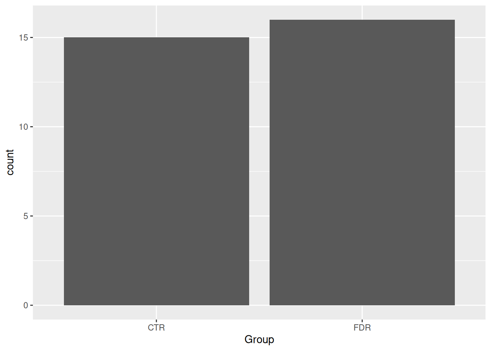
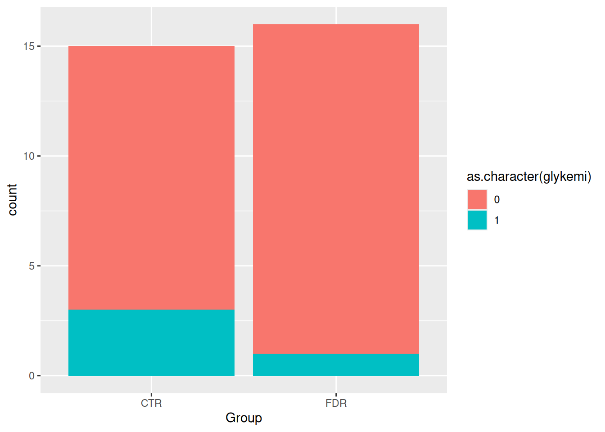
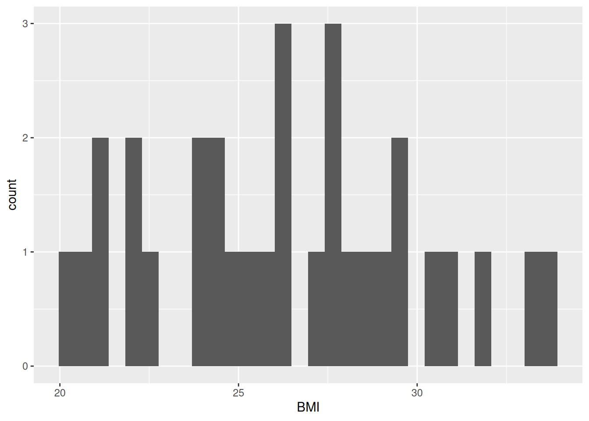
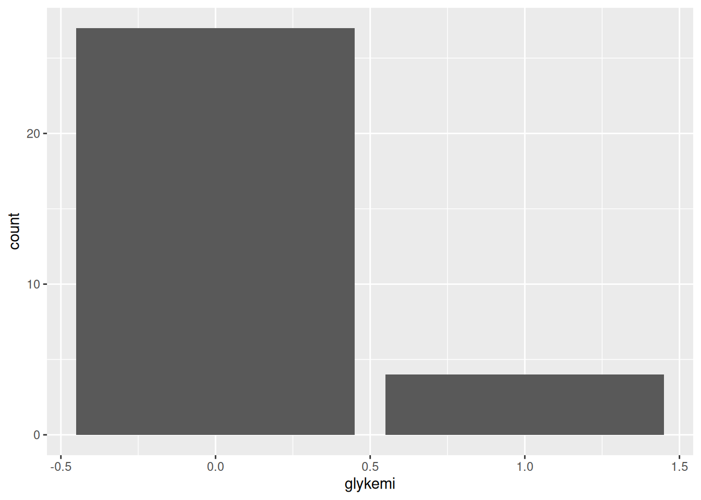
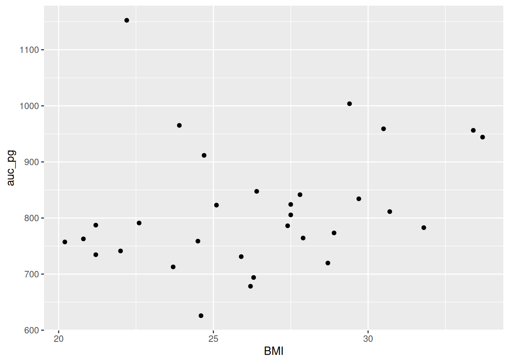
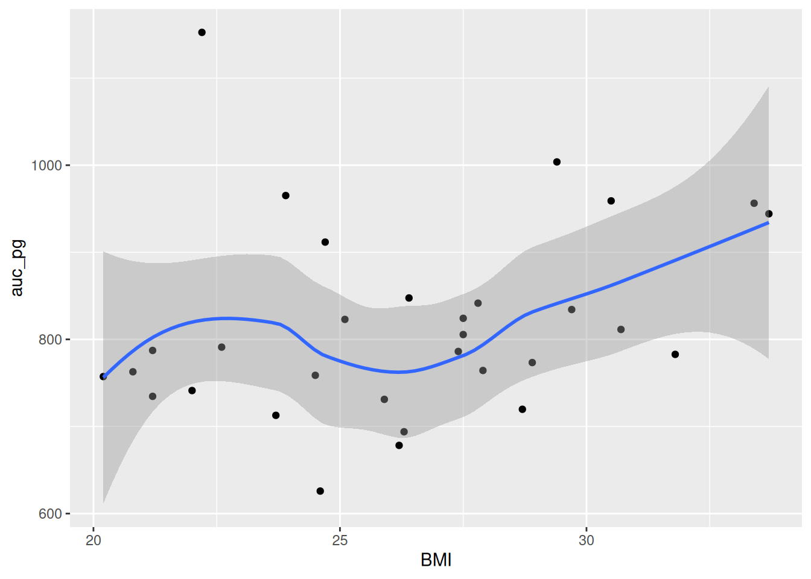

docs/learning.qmd
ggplot(post_meal_data, aes(x = BMI))
🚧 This section is being actively worked on. 🚧
Visualizing research data and especially the results of an analysis can be an effective way of communicating your findings to others. In this session, we will cover the basics of creating plots.
Because this is fairly short, you don’t need to spend too much time going over it.
Time: ~4 minutes
Making graphs in R is relatively easy compared to other programs and can be done with very little code. Because it takes a few lines of code to create multiple types of plots, it gives you some time to consider: why you are making them; whether the graph you’ve selected is the most appropriate for your data or results; and how you can design your graphs to be as accessible and understandable as possible.
To start, here are some tips for making a graph:
There are also excellent online books on this that are included in the resources page of the Guides website.
Time: ~6 minutes
ggplot2 is an implementation of the “Grammar of Graphics” (“gg”). This is a powerful approach to creating plots because it provides a set of structured rules (a “grammar”) that allow you to expressively describe components (or “layers”) of a graph. Since you are able to describe the components, it is easier to then implement those “descriptions” in creating a graph. There are at least four aspects to using ggplot2 that relate to its “grammar”:
aes(): How data are mapped to the plot, including what data are put on the x and y axes, and/or whether to use a colour for a variable.geom_ functions: Visual representation of the data, as a layer. This tells ggplot2 how the aesthetics should be visualized, including whether they should be shown as points, lines, boxes, bins, or bars.scale_ functions: Controls the visual properties of the geom_ layers. Can be used to modify the appearance of the axes, to change the colour of dots from, e.g., red to blue, or to use a different colour palette entirely.theme_ functions or theme(): Directly controls all other aspects of the plot, such as the size, font, and angle of axis text, and the thickness or colour of the axis lines.There is a massive amount of features in ggplot2. Thankfully, ggplot2 was specifically designed to make it easy to find and use its functions and settings using tab auto-completion. To demonstrate this feature, try typing out geom_ and you’ll start seeing a menu pop-up with a list of functions that start with geom_. You can then use the arrow keys to move up and down the list and then hit either Enter or Tab to select the function. You can use this with scale_ or the options inside theme(), for instance try typing out theme(axis. to see all options for the axis a list of theme settings related to the axis will pop up.
So, why do we teach ggplot2 and not base R plotting? Base R plotting functionality is quite good and you can make really nice publication-quality graphs. However, there are several major limitations to base R plots from a beginner and a user-interface perspective:
cex argument can be used to magnify text and symbols, but you can’t immediately tell from the name that it does that).These limitations are due to the fact that base R plotting was developed:
On the other hand, ggplot2:
These are the reasons we teach and use ggplot2.
Very often you want to get a sense of your data, one variable (i.e. column in a data frame) at a time. You create plots to see the distribution of a variable and visually inspect the data for any problems. There are several ways of plotting continuous variables like age or BMI in ggplot2. For discrete variables like diabetes status, there is really only one way.
We use the word variable to mean a column in a data frame that is tidy. If you recall the definition of tidy data, it consists of “variables” (columns) and “observations” (rows) of a data frame. To us, a “variable” is something that we are interested in analyzing or visualizing, and which only contains values relevant to that measurement For instance, an age variable must only contain values in a unit of time like years.
Our post_meal_data data frame is fairly tidy, though there are a few things we will fix in later sessions. Rows are individual participants at a specific time and the columns are the variables that were measured, like weight. Let’s visually explore our data! In the LearningR project in the docs/learning.qmd file, create a new second-level header on the bottom of the file called ## Plot one continuous variable and create a new code chunk below the header with ?var:keybind.chunk. Then we can make our first plot!
Since BMI is a strong risk factor for diabetes, let’s check out the distribution of BMI among the participants. There are two good geoms for examining distributions for continuous variables: geom_density() and geom_histogram(). Before we can make a plot, we need to tell ggplot2 what data we are using and which variable to put in which axis or dimension. For that we use the ggplot() function with the aes() function used inside of it.
docs/learning.qmd
ggplot(post_meal_data, aes(x = BMI))
Run this code by using ?var:keybind.run-code. You’ll get a blank plot. That’s because we haven’t told ggplot2 what kind of plot we want to make, which needs a geom_ function.
We’ll start with creating a histogram, which is a useful way of visualizing the distribution of a continuous variable. We do that with geom_histogram(), but you can easily replace the code with geom_density() to make a density plot. Note that it is good practice to always create a new line after the +.
docs/learning.qmd
ggplot(post_meal_data, aes(x = BMI)) +
geom_histogram()`stat_bin()` using `bins = 30`. Pick better value `binwidth`.
Our plot shows that, for the most part, there is a even distribution with BMI. In general, it is good practice to create a new code chunk for each plot in Quarto for several reasons. One, it makes it easier to maintain a nice readable code and, two, there are some chunk options that only work with one figure. However, it is possible to show multiple graphs for instance side-by-side, as we will do later.
Time: ~10 minutes.
Using the same structure as the code from above, let’s plot a discrete variable. The geom_histogram() from above is appropriate for plotting continuous variables, but not for discrete variables. Sadly, there’s really only one: geom_bar(). This isn’t a geom for a barplot though; instead, it shows the counts of a discrete variable. There aren’t too many discrete variables our dataset, only Group and glykemi, so let’s use this geom to visualize those.
For this exercise, create a new header at the bottom of the docs/learning.qmd file called ## Exercise: discrete plots. Then, copy the below code chunk template and paste it below the header. Complete the tasks below on this template.
docs/learning.qmd
```{r}
ggplot(post_meal_data, aes(x = ___)) +
___()
```
See above for a cool plot!Group or glykemi to plot on the x axis in the aes() function, replacing the ___ with the one you chose.___ below the ggplot() function with geom_bar().#| fig-cap where the ___ is placed.#| label option section, again, replacing the fig-___ with a label that describes the plot, like fig-group-bar
___ under the code chunk where the @fig- reference is with the label you chose in the plot (like @fig-group-bar).```{r solution-discrete-variables}
#| eval: false
#| code-fold: true
#| code-summary: '**Click for the solution**. Only click if you are struggling or are out of time.'
# This is a potential solution
ggplot(post_meal_data, aes(x = glykemi)) +
geom_bar()
```Unlike plotting continuous variables, there are not as many plotting options for discrete variables, even two of them, without major data wrangling. You’ve already tried the geom_bar() for one variable, let’s do one for two variables. We can use the geom_bar() “fill” option to have a certain colour for different levels of a variable. Let’s use this to see differences between Group and glykemi. Create a new header at the bottom of the file called ## Plotting two discrete variables and create a new code chunk below that with ?var:keybind.chunk. While we could put either Group or glykemi on the x-axis, let’s put Group on the x-axis and glykemi as the fill.
docs/learning.qmd
ggplot(post_meal_data, aes(x = Group, fill = glykemi)) +
geom_bar()Warning: The following aesthetics were dropped during statistical
transformation: fill.
ℹ This can happen when ggplot fails to infer the correct grouping
structure in the data.
ℹ Did you forget to specify a `group` aesthetic or to convert a
numerical variable into a factor?
Run this code with ?var:keybind.run-code. You’ll see we get a warning message, which tells us the problem: glykemi should be a factor or a character for the fill aesthetic, but it is actually a number. The fill aesthetic needs a categorical variable, not a continuous one. We can easily fix this by using as.character() on the glykemi variable in the aes() function.
docs/learning.qmd
ggplot(post_meal_data, aes(x = Group, fill = as.character(glykemi))) +
geom_bar()
Running this code with ?var:keybind.run-code will show you a barplot of Group with glykemi as the fill, without the warning message. But the legend on the side is a bit ugly. It’s easy to fix with the use of the theme() function, but we won’t cover that in this session.
By default, geom_bar() will make “fill” groups stacked on top of each other. In this case, it isn’t really that useful, so let’s change them to be sitting side by side. For that, we need to use the position argument with a function called position_dodge(). This new function takes the “fill” grouping variable and “dodges” them (moves them) to be side by side.
docs/learning.qmd
ggplot(post_meal_data, aes(x = Group, fill = as.character(glykemi))) +
geom_bar(position = position_dodge())
We can see from this plot there are very few people with the glykemi as 1. Let’s render the document with ?var:keybind.render to see the plot in the output document.
While we said in general you should use one figure per code chunk, if you want figures to be side by side as “one figure”, you can use a feature in Quarto to place figures into other different layouts. It is described in more detail in Quarto’s Figures page.
First, let’s create a new header called ## Side by side plots and create a new code chunk with ?var:keybind.chunk below that. Then write out the same code for the figures from above.
docs/learning.qmd
ggplot(post_meal_data, aes(x = BMI)) +
geom_histogram()`stat_bin()` using `bins = 30`. Pick better value `binwidth`.
ggplot(post_meal_data, aes(x = glykemi)) +
geom_bar()
Before we continue, let’s see what that looks like by rendering the document with ?var:keybind.render. See how the figures are placed one after the other?
Time: ~5 minutes
Before continuing with plotting, let’s take a minute to talk about a commonly used barplots with mean and error bars. In all cases, barplots should only be used for discrete (categorical) data where you want to show counts or proportions. As a general rule, they should not be used for continuous data. This is because the commonly used “bar plot of means with error bars” actually hides the underlying distribution of the data. To have a better explanation of this, you can read the article on why to avoid barplots after the workshop. The image below was taken from that paper, and briefly demonstrates why this plot type is not useful.

If you do want to create a barplot, you’ll quickly find out that it is actually quite hard to do in ggplot2. The reason it is difficult to create in ggplot2 is by design: it’s a bad plot to use, so use something else.

There are many more types of “geoms” to use when plotting two variables. Your choice of which one to use depends on what you are trying to show or communicate, and the nature of the data. Usually, the variable that you “control or influence” (the independent variable) in an experimental setting goes on the x-axis, and the variable that “responds” (the dependent variable) goes on the y-axis.
For now, let’s focus on plotting continuous data, since our data has a lot of continuous data and often in research we work with more continuous than discrete variables. When you have two continuous variables, some geoms to use are:
geom_point(), which is used to create a standard scatterplot. Since it is so commonly used, we’ll use this one.geom_hex(), which is used to replace geom_point() when your data are massive and creating points for each value takes too long to plot.geom_smooth(), which applies a “regression-type” line to the data.Let’s check out how BMI may influence the area under the curve for blood glucose after the meal using a point plot. The area under the curve of glucose is a measure of how much glucose is present in the blood over a fixed period of time. A higher area under the curve for glucose usually suggests that the body has a harder time handling glucose. But, like everything in biology, it’s more complex than that. But we won’t cover that complexity in this workshop.
First, write out a new Markdown header called ## Plotting two continuous variables at the bottom of the document and create a new code chunk below the header with ?var:keybind.chunk. Like with the previous plot we created using BMI, we’ll put BMI on the x axis in the aes() function, since we are assuming that BMI “causes” or contributes to higher glucose in the blood after a meal. Then we put the area under the curve for glucose (auc_pg) on the y axis, since it will be “responding to” or “caused by” BMI.
docs/learning.qmd
ggplot(post_meal_data, aes(x = BMI, y = auc_pg)) +
geom_point()
Run this code chunk with ?var:keybind.run-code. You’ll see a scatterplot of BMI and the area under the curve for glucose. Notice how there is a bit of an increase in glucose as BMI increases? Because ggplot2 works in layers, we can add another layer to the plot by adding a + after the geom_point() function. Let’s add a smoothing line to the plot to see if there is a general trend between BMI and glucose by using geom_smooth().
docs/learning.qmd
ggplot(post_meal_data, aes(x = BMI, y = auc_pg)) +
geom_point() +
geom_smooth()`geom_smooth()` using method = 'loess' and formula = 'y ~ x'
Run this code chunk with ?var:keybind.run-code and we’ll see a scatterplot of BMI and the area under the curve for glucose with a smoothing line on top of the points. Before rendering our HTML document, let’s add a caption and label to the plot:
ggplot(post_meal_data, aes(x = BMI, y = auc_pg)) +
geom_point() +
geom_smooth()`geom_smooth()` using method = 'loess' and formula = 'y ~ x'
Now, let’s make our HTML document by rendering the document with ?var:keybind.render. Now you can see the plot in the rendered document! This makes a nice smoothing line through the data and gives us an idea of general trends or relationships between the two variables.
aes() to say which data to plot and how, geom_ to set the kind of plot to use, scale_ to make the plot prettier, and theme() to control the specifics of the plot. We covered the aes() and geom_ layers.geom_point() to create a scatterplot of two continuous variables.geom_smooth() to add a smoothing line to the scatterplot.geom_bar() to create a barplot of discrete variables.Please complete the survey for this session: